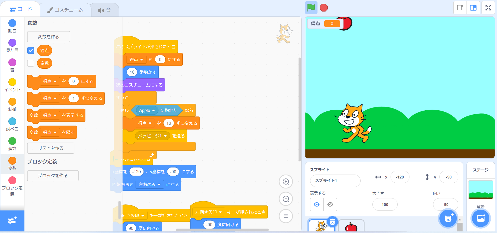

1-2 ゲーム

1.内容
ねこがりんごを集めるミニゲームを作成した。
右向きキーを押されたとき右へ左向きキーを押されたとき左へ進み、コスチューム変更と
体を90°動かすことでまるで走っているように見えるようになっている。
またりんごとねこにそれぞれプログラムを作成し、りんごがねこに触れるごとに10点ずつ
得点が増加するプログラムである。
2.感想
もっとたくさんの工程を踏んで作るものだと思っていたのですが、創造よりも簡単に
作成することができプログラミングに興味をもつきっかけにとても良いと思いました。